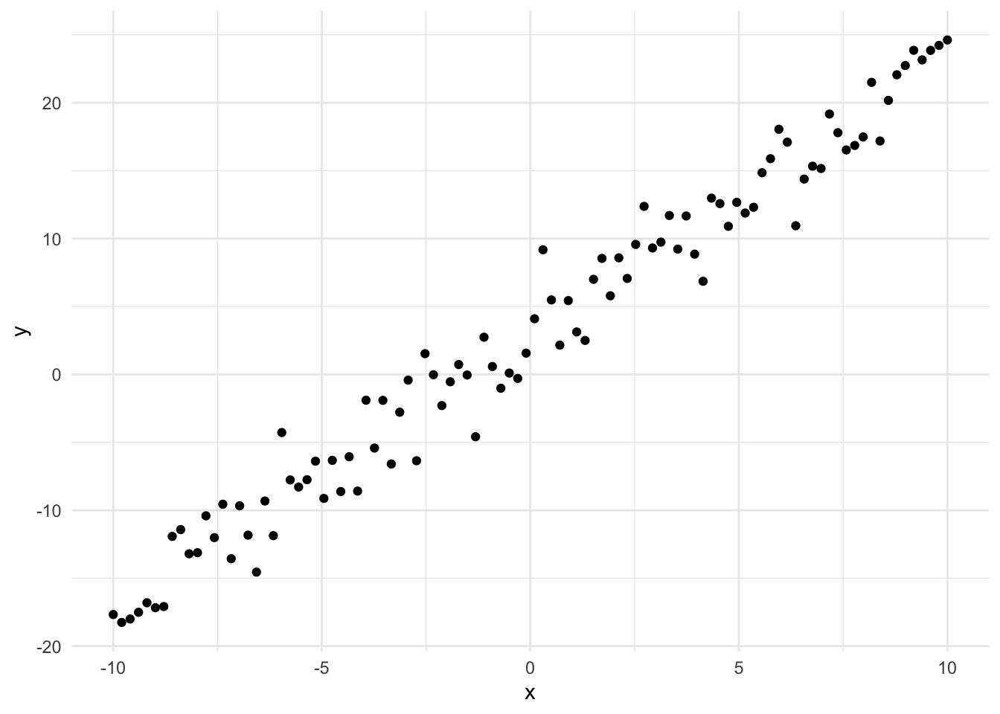
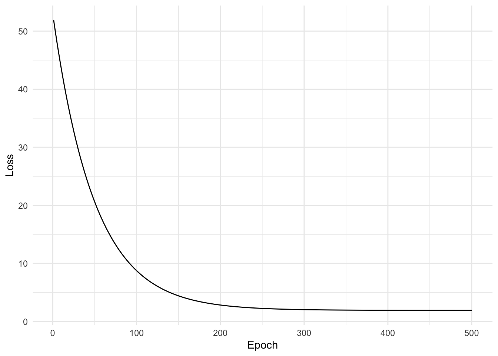
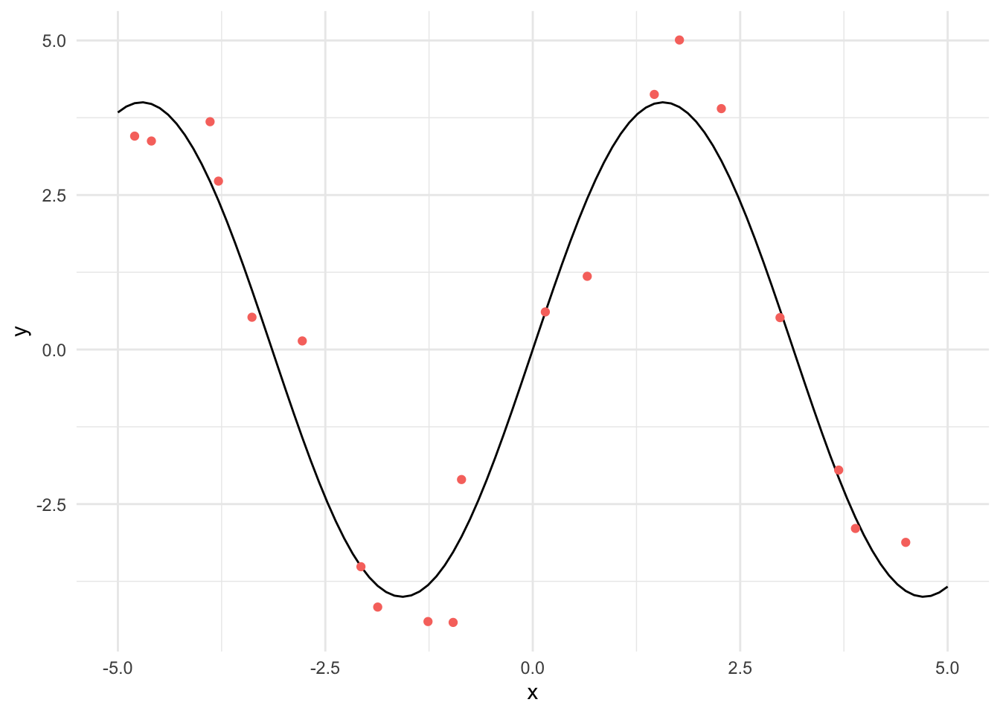
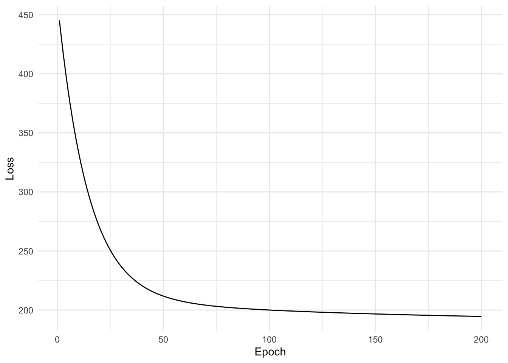

This post explores how to create a simple neural network to learn a linear function and a non-linear function using both standard R and the Torch library for R.
Warning: package 'torch' was built under R version 4.1.2
theme_set(theme_minimal())
In this post we will see how to train a neural network model using R and the TorchR library which is a port of the Python torch library without dependencies on Python. Torch provides tensors (n-dimensional arrays), automatic differentiation of tensors, optimisation routines and additional helpers for common deep learning tasks such as computer vision and audio processing.
A neural network is built of layers. A layer consists of a set of weights, which are the parameters of the layer and an activation function (this can have additional parameters too). A single layer looks like the linear predictor in a generalised linear model,
\[
\eta = g(x^Tw),
\]
where \(\eta\) is the linear predictor, \(g\) is the linking function and \(w\) represent the coefficients of the covariates \(x\). In machine learning, \(x\) is referred to simply as the input, \(w\) are the weights and \(g\) is the activation function. There is often an additional parameter, termed the intercept in generalised linear models and the bias in machine learning. This can be rolled in to the weight vector by appending a one to the input / covariates. We can encapsulate this logic in a function
We also require a loss function, to understand how well our model is fitting to the data. For a regression problem we can use squared loss.
loss <-function(pred, y) {sum((y - pred)^2)}
We will define a simple linear regression problem, our observations are noisy observations of a straight line.
\[y \sim \mathcal{N}(x^Tw, 2.0)\]
x <-seq(-10, 10, length.out=100)y <-rnorm(100, mean =2* x +3, sd =2.0)qplot(x, y, geom ="point")

We wish to learn the relationship between the inputs \(x\) and the outputs \(y\) using the model. To understand how well the model fits the observed data, we make a prediction by passing an observed input to the model (which is defined as a single layer), then we calculate how far the prediction is from the observed output using the squared loss function. The activation function is linear, or the identity function (function(x) x).
w <-matrix(c(1, 1))x_intercept <-cbind(1, x)prediction <-layer(x_intercept, w, function(x) x)loss(prediction, y)
[1] 4470.924
To find the best fit for this model to the observed data, we need to manipulate the weights to reduce the loss function. We can think of the weights as parameterising a family of related models, some of which may fit the data well.
Optimisation
To find the maximum of a function in calculus, we first calculate the derivative and determine the point at which the slope is equal to zero. This can find both maximums and minimums (or saddle points), so we can additionally calculate the second derivative and if it’s negative then we have a maximum. This is fine for linear optimisation, however when it comes to non-linear optimisation we have to be more creative. We can use gradient descent to take steps in the opposite direction of the gradient to find the minimum of a non-linear function
We must calculate the derivative of the network with respect to the weight parameters. For a single layer network with univariate inputs, a linear activation function and a squared loss function the derivative is
Then we must write the forward function of the model, pred and calculate the loss using the functions available on Torch tensors. We can then call backward() which performs reverse mode automatic differentiation then we can access the grad attribute of any tensor which has requires_grad = TRUE.
network_gradient_torch <-function(x, y, w) { pred <- w$t()$mm(x) loss <- (y - pred)$pow(2)$sum() loss$backward() w$grad}network_gradient_torch(x =torch_tensor(as.matrix(x_test)),y =torch_tensor(as.matrix(y_test)),w =torch_tensor(as.matrix(w), requires_grad =TRUE))
torch_tensor
0.1510
0.0542
[ CPUFloatType{2,1} ]
We can fit this simple model by writing a training loop which updates the parameters using gradient descent. We keep track of the loss function at each iteration of gradient descent and plot it.
observed <-tibble(x, y) %>%sample_n(50)
training_loop <-function(x, y, init_w, epochs, learning_rate) {# Record all changes to parameters and training loss ws <-matrix(NA_real_, nrow = epochs +1, ncol =length(init_w)) ws[1,] = init_w losses <-numeric(length(y))for (i inseq_len(epochs)) {# Pad the input with 1 for intercept/bias input <-cbind(rep(1, times =length(x)), x)# Made a prediction using the model pred <-layer(input, ws[i,], function(z) z)# We can calculate and log/print the loss losses[i] <-loss(y, pred)# calculate the gradient at this point gradient <-network_gradient(x = input, y = y, w = ws[i, ])# Update using gradient descent ws[i +1, ] <-gradient_step(learning_rate, ws[i, ], gradient) }list(weights = ws, losses = losses)}
out <-training_loop(x =scale(observed$x), y =scale(observed$y), c(1, 1), 500, 1e-4)qplot(x =seq_along(out$losses), y = out$losses, geom ="line") +labs(x ="Epoch", y ="Loss")

Since this model is so small, consisting of only two weights. We can plot the actual function learned by the model using geom_abline.
We can try to use this model on a simple non-linear regression problem, of course we probably won’t do very well here! We define the regression problem as
\[y \sim \mathcal{N}(4\sin(x), 1^2).\]
We plot the true function and the observed values in red below.
n <-100x <-seq(-5, 5, length.out=n)y <-4*sin(x)y_obs <-4*sin(x) +rnorm(n, sd =1)non_linear <-tibble(x, y_obs) %>%sample_n(20)qplot(x, y, geom ="line") +geom_point(data = non_linear, aes(x = x, y = y_obs, colour ="Observed")) +theme(legend.position ="none")

out <-training_loop(non_linear$x, non_linear$y_obs, c(1, 1), 200, 1e-4)qplot(x =seq_along(out$losses), y = out$losses, geom ="line") +labs(x ="Epoch", y ="Loss")

We can then plot the learned function against the observed values and the true function. We can see that a straight line is not a good fit for this data, we need more flexibility in the network.
If we want to approximate a non-linear function, we best use non-linear activation functions. We can calculate the derivative of each layer using automatic differentiation. We will use the R Torch library. We now initialise a torch tensor with the same values as x and pass it through the layers. We must re-write the layer and loss functions assuming the input is a torch_tensor. First we will re-write the linear example using Torch
model <-nn_linear(1, 1)loss <-function(y, pred) { (y - pred)$pow(2)$sum()}train_torch <-function(x, y, model, loss, epochs) { alpha <-1e-4 x_in <-torch_tensor(as.matrix(x))for (i inseq_len(epochs)) { pred <-model(x_in) losses <-loss(torch_tensor(y), pred) model$zero_grad() losses$backward()if (i %%10==0)cat("Epoch: ", i, " Loss: ", losses$item(), "\n")with_no_grad({ model$parameters %>% purrr::walk(function(param) param$sub_(alpha * param$grad)) }) } model}trained_model <-train_torch(scale(observed$x), scale(observed$y), model, loss, 200)
Try the non-linear example with multiple layers and a non-linear activation function from the first layer (where the input goes). We’ll also try a different optimizer, Adam.
train_torch <-function(x, y, model, loss, epochs, learning_rate) { x_in <- x optimiser <-optim_adam(model$parameters, lr = learning_rate)for (i inseq_len(epochs)) { pred <-model(x_in) losses <-loss(y, pred) model$zero_grad() losses$backward()if (i %%10==0)cat("Epoch: ", i, " Loss: ", losses$item(), "\n") optimiser$step() } model}model <-nn_sequential(nn_linear(1, 64),nn_relu(),nn_linear(64, 1))trained_model <-train_torch(torch_tensor(as.matrix(non_linear$x)),torch_tensor(as.matrix(non_linear$y_obs)), model, nnf_mse_loss,100, 0.1)